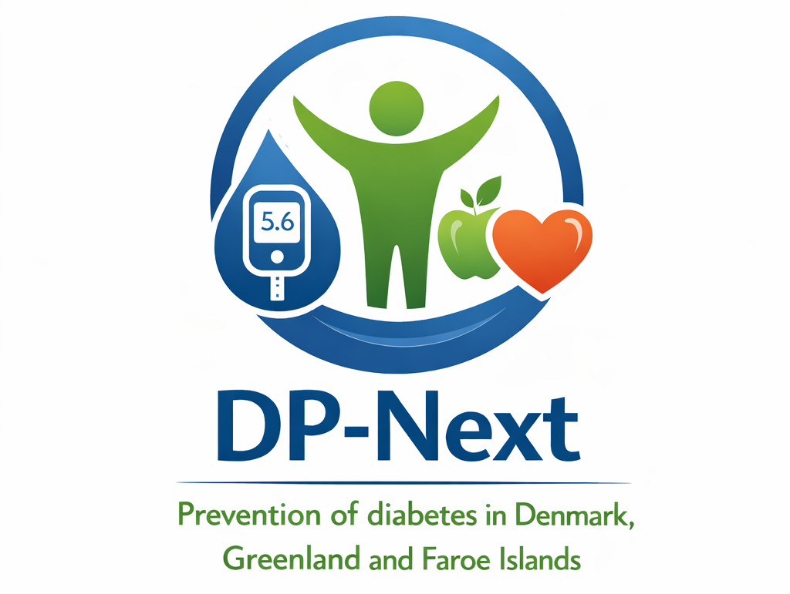

| Study name: | Sustainable Type 2 Diabetes Prevention for the 21st Century |
| Short name: | DP-Next |
| SOP title: | Standard operating procedure for fecal samples in DP-Next |
| SOP short title: | SOP on fecal samples |
| SOP Version: | 1 |
| Authored by | Mikkel Steentoft |
| Date: | 31.08.2026 |
Purpose
- This standard operating procedure (SOP) describes the process of preparing, receiving, storing and recording fecal samples in the DP-Next study.
Scope
- All eligible participants are instructed to collect two stool samples prior to CID1 (Deep phenotyping - visit 1). Patient are provided with sample kit and detailed written instructions for collecting the stool samples.
- The patient will bring the sample to CID1, where it is received by the staff. The staff will ask the patient: “Have you used any antibiotics or probiotics within the last 3 months?” and record the answer in REDCap.
- It is the responsibility of the person collecting each fecal sample to ensure that samples are correctly stored and recorded.
Equipment and Preparation
Prior to the information meeting (visit 0), prepare and pack the following in a zip-lock bag, except the cooling bag and cooling packs:
1x Cooler bag
2x Ice packs
1x Stool collection paper/bag (e.g., EasySampler)
2x Stool collection tubes with brown caps and integrated spoons
2x Transport containers
1x Plastic bag
Disposable gloves
Disinfectant wipes
1x Waterproof marker
1x Printed usage guide (‘Deltagerinformation – Afføringsprøve’ / EasySampler guide: https://imagecache.nomeco.dk/mud/222527
1x Printed overview stating:
Participant ID
Visit number
Date and time of stool collection
Instructions
- The participant will be provided with detailed written instructions for collecting the fecal sample when receiving the Easysampler kit at Information meeting and consent (visit 0).
Procedure for receiving stool samples
Receive the cooler bag containing the samples.
Put on gloves.
Open the zip-lock and remove the two transport containers.
Open the transport containers and remove the samples.
Record the ID number, visit number, and date and time of the sample on 2 x -80 °C labels, and attach them to the sample tubes.
Placing Samples in the Freezer:
Write the ID number in the next available position in the box.
Discard the bag in which the samples were delivered.
Remove gloves and perform hand hygiene.
Documentation and Quality Control
- Record in REDCap under the respective visit day that the stool sample has been submitted. Also note if and why the participant did not submit a sample, and arrange a new time for submission.
Deviations, Errors, and Equipment Malfunction
Deviations of returning process of the sample will be handled as follows:
If liquid has been removed from the tube: Add 5 ml of 96% ethanol to the tube and record this in REDCap.
If the sample is not returned in the tube: Discard immediately.
References
Version History
| Version | Date | Prepared by | Approved by |
|---|---|---|---|
| 1 | 31.08.2026 | Mikkel Steentoft |